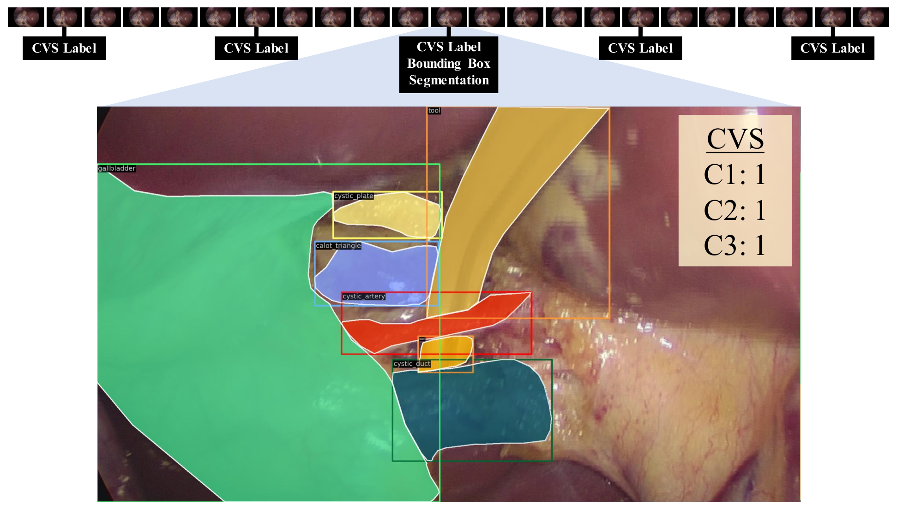
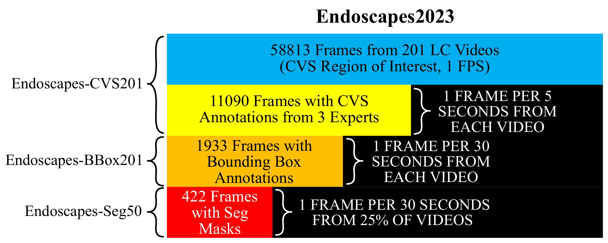
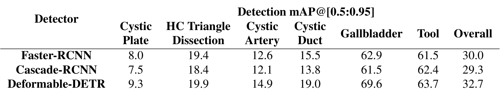
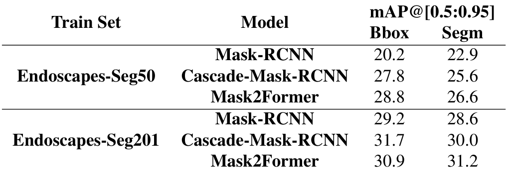
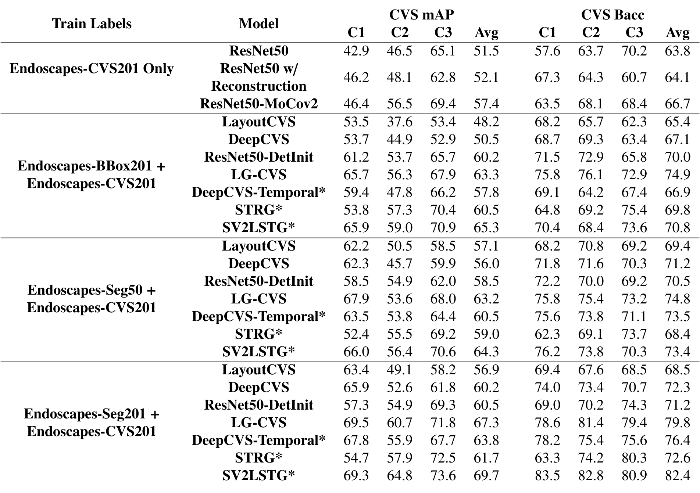

图文解读
1背景与动机
关键安全视野(CVS)的自动判断难在要看清很小、很模糊的解剖结构。 CVS 由三项准则组成:C1 两结构、C2 肝胆三角清理、C3 胆囊板。论文认为它比阶段识别、器械检测更难,因为它依赖对细粒度解剖结构的准确识别。
作者的前作 DeepCVS 卡在数据上。 它从 201 个视频里手选了 2854 张“可评估”图像,带有选择偏差;CVS 测试集只有 571 张,分割测试集只有 80 张,模型之间的差异很难分辨。
所以这份技术报告要解决的是:在同一批视频上,不经人工挑帧,构建一个规模足够、标注层次丰富的数据集,并给出固定划分和可比较的基线。
2核心观点速览
论文的答案是 Endoscapes2023,四个子集按同一视频划分严格嵌套:
| 子集 | 视频 | 标注帧 | 标注频率 |
|---|---|---|---|
| CVS201 | 201 | 11090 帧 CVS(三位专家) | 每 5 秒 1 帧 |
| BBox201 | 201 | 1933 帧边界框 | 每 30 秒 1 帧 |
| Seg201(私有) | 201 | 1933 帧掩码 | 每 30 秒 1 帧 |
| Seg50(公开) | 50 | 493 帧掩码(摘要写 422) | 每 30 秒 1 帧 |
全部 58813 帧来自 CVS 可评估区间,按 1fps 抽取。基线的结论是:胆囊板和肝胆三角最难识别,借助框的图方法明显优于只用 CVS 标签的分类器,但专家之间的一致性本身就不高。
接下来先看数据怎么来的,再看评测协议。
3数据怎么来的
关键改动是把“挑帧”换成“定频抽帧”。 抽帧区间从任一准则可评估开始,到第一次上夹结束,区间内按 1fps 抽帧。CVS 每 5 秒标 1 帧,分割每 30 秒标 1 帧,边界框从掩码自动导出,所以框和掩码天然一致。

去掉手选后,标注员会遇到大量难判断的帧,作者为此制定了更严格的标注协议并多轮复核。视频划分以视频级 CVS 达成为分层变量,按患者切分。Seg50 再从三折中分层抽出 30/10/10 个视频。

视频来自几个中心、什么设备、患者信息和伦理审批,论文未说明,这限制了对跨中心泛化的判断。
4标签有多可靠
三位专家独立标注 CVS,真值是多数投票,但他们之间的一致性只有一般到中等。 各准则的 Cohen's kappa 为两结构 0.33、肝胆三角 0.53、胆囊板 0.44,总体 0.38。kappa 是在全部帧还是子集上算的,论文未说明。
我的判断:真值本身带噪声,模型分数的上限会被压低,但压低多少论文未说明,也没有用单个专家标签训练的对照。
正样本极少。 帧级总体 CVS 达成率在训练、验证、测试集上只有 5.3%、7.3%、7.7%,视频级则是 28.3%、36.6%、35.0%。视频级只要求每项在某一帧达成过,所以高得多。测试集帧级比率普遍高于训练集,例如两结构 24.0% 对 15.6%,其影响论文未说明。
这么不平衡的标签决定了评测协议的选择。
5评测协议
CVS 预测用平均精度和平衡准确率,不用准确率。 全输出 0 的分类器在这种不平衡下准确率会很高,在平衡准确率上每个准则只能拿到一半。指标在测试集全部帧上逐准则计算,再对三项取平均。
$$\mathrm{mAP}_{\mathrm{CVS}}=\frac{1}{3}\sum_{c\in\{C1,C2,C3\}}\mathrm{AP}_c$$
检测和分割用 COCO 风格的 mAP@[0.5:0.95]。CVS 预测分三种训练标签:只用 CVS、加框、加公开掩码,另列私有掩码结果作为天花板。前两种结果引自作者前作 [9][8],第三种由作者重跑。
训练用 mmdetection,CVS 模型用按逆频率加权的二值交叉熵。判定阈值、学习率、批大小、输入分辨率,论文未说明。
6检测与分割结果

差距在类别之间,而不在模型之间。 总体最好的 Deformable-DETR 为 32.7。胆囊和器械在 61.5 到 69.6,胆囊板只有 7.5 到 9.3,肝胆三角 18.4 到 19.9。所以总分主要由容易的大目标撑起,不能代表对 CVS 关键结构的识别能力。

训练掩码从 1212 帧降到 343 帧后,掩码平均精度下降 4.4 到 5.7 个点(自算)。逐类看,胆囊板掩码平均精度只有 1.7 到 6.5。Seg50 测试集里肝胆三角只出现在 9.5% 的帧中,这类分数很可能落在噪声内。
7CVS 预测结果

| 方法 | 仅 CVS | 加框 | 加公开掩码 | 加私有掩码 |
|---|---|---|---|---|
| ResNet50 | 51.5 | — | — | — |
| ResNet50-MoCov2 | 57.4 | — | — | — |
| LayoutCVS | — | 48.2 | 57.1 | 56.9 |
| LG-CVS | — | 63.3 | 63.2 | 67.3 |
| SV2LSTG* | — | 65.3 | 64.3 | 69.7 |
(平均 mAP,星号为时空方法。)
对象级图方法领先。 有框时 LG-CVS 和 SV2LSTG 达到 63.3 和 65.3,只把布局图交给卷积网络的 LayoutCVS 反而低于纯 ResNet50。换成公开掩码后,布局类方法明显提升,图方法基本持平,原因论文未说明。用私有掩码时 SV2LSTG 平均精度 69.7、平衡准确率 82.4。
低标签时选哪些视频很重要。 只用 25% 训练视频时,ResNet50 平均精度 40.5 ± 7.0,MoCov2 初始化为 48.8 ± 3.2;12.5% 时分别为 33.8 ± 4.1 与 38.9 ± 5.6。这是全文唯一带方差的结果。
这些数字看起来支持论文的主张,下一节检查它们没有证明什么。
8结果没有证明什么
无选择偏差只部分成立。 抽帧不再人工挑选,但区间的起止点仍由人判定,偏差可能只是从挑帧移到了挑区间。区间判定的一致性和新旧测试集上的对比,论文未说明。
图方法的增益来源没有分开。 LG-CVS 比 LayoutCVS 高 15.1 个点(自算),但用检测器骨干初始化的 ResNet50-DetInit 已有 60.2,增益可能主要来自更好的视觉特征。去掉图中边的消融论文未说明。
天花板差距没有排除方差。 私有掩码与公开掩码的差距可能部分来自单次运行和小测试集。除低标签外,所有结果的方差论文未说明。
分层标注模拟真实成本只是定性说法。 标注时长或成本数字论文未说明。
9和其他数据集的关系
相对 DeepCVS,同样的 201 个视频,CVS 帧从 2854 张变为 11090 帧,掩码从 402 张变为 1933 帧(公开 493 帧),并去掉了手选。引用中列出了 Cholec80-CVS 等同领域工作,但正文没有比较规模或结果,优劣论文未说明。
10复现要注意什么
- 用官方 120/41/40 划分和公开的低标签三组划分;Seg50 的 30 个训练视频等于 25% 子集的第三折。
- 以仓库实际文件确认 Seg50 是 422 帧还是 493 帧。
- CVS 指标按逐准则在全部测试帧上计算再平均,训练时按逆频率加权。
- 检测和分割的总体分数按表 2 核算是 6 类算术平均(自算),汇报时同时给逐类结果。